KREATIVNÍ AI
Jak tvořit s umělou inteligencí – od pixelu po obraz
Multimediální AI kroužek
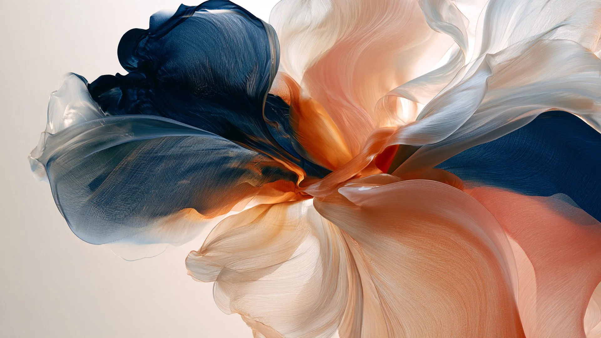
Co je AI
AI nemyslí jako člověk. Hledá vzory v obrovském množství dat a předpovídá, co nejspíš přijde dál.
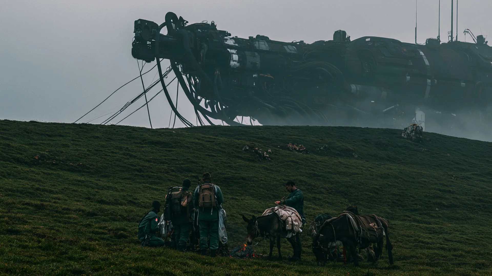
JAK FUNGUJE
Data
Miliony textů, obrázků, videí a zvuků
→
Trénink
Model v nich hledá vzory a souvislosti
→
Generování
Z tvého zadání (promptu) skládá nový výstup
Model viděl tisíce fotek koček – a proto umí nakreslit kočku, kterou ještě nikdo neviděl.
Jak neuronka vidí obrázek · 1/5
OBRÁZEK = ČÍSLA
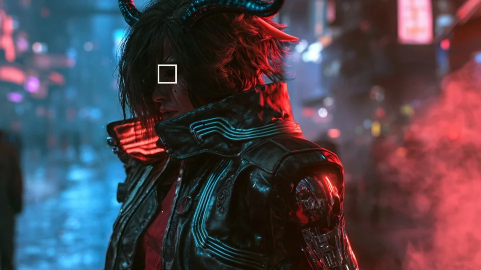
Obrázek
→
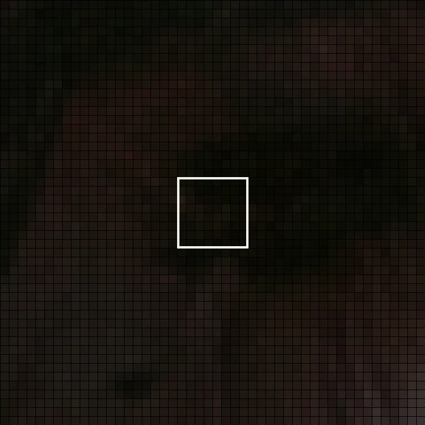
Zoom: pixely
→
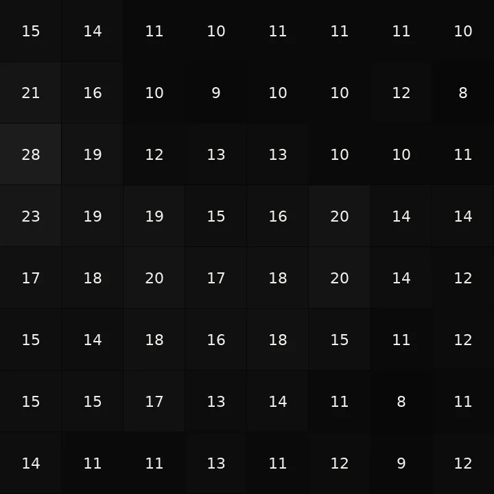
Čísla 0–255
Jak neuronka vidí obrázek · 2/5
HLEDÁ HRANY
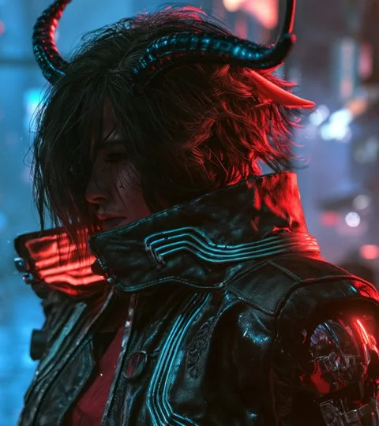
Vstup
→
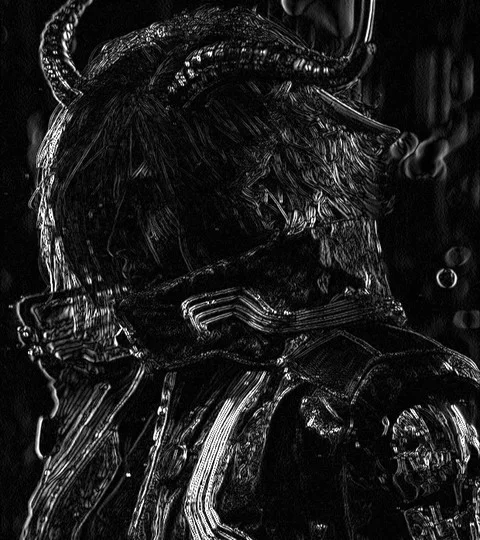
Filtr: svislé hrany
→
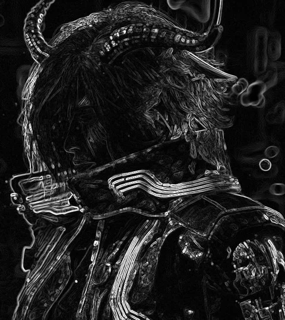
Všechny hrany
→
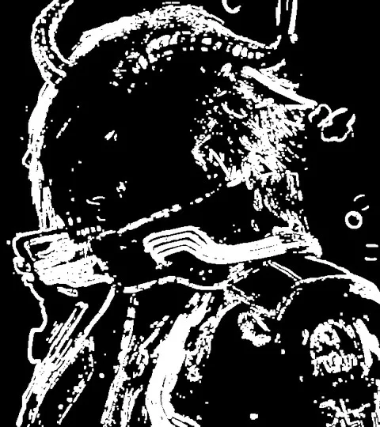
Obrysy a tvary
Jak neuronka vidí obrázek · 3/5
VRSTVY
Jak neuronka vidí obrázek · 4/5
VEKTORY
Na konci je každý obrázek i slovo jen seznam čísel – vektor. Podobné věci leží blízko sebe.
pes = [0,21; −0,73; 0,05; …]
Jak neuronka vidí obrázek · 5/5
ZE ŠUMU OBRAZ
Prompt: „a deep valley at dusk with grey granite rocks peeking through…“ → vektor → model
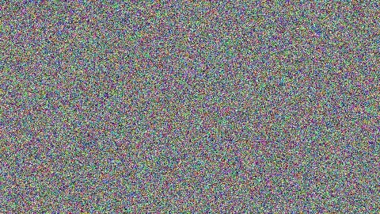
Start: čistý šum
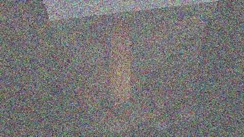
Krok po kroku…
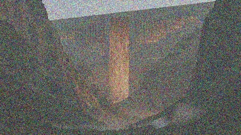
…ubírá šum…
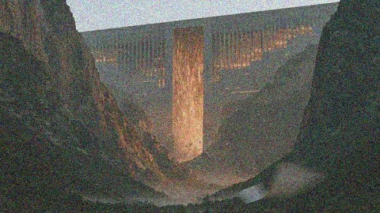
…podle promptu
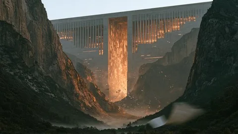
Hotovo
Ilustrace principu na hotovém AI obrázku – mezikroky jsou simulované.
Další typy generování · 1/3
PO KOUSCÍCH
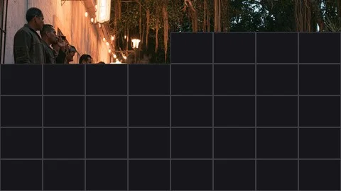
12 dílků
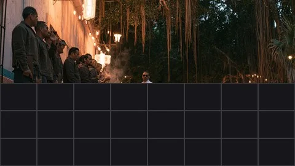
24 dílků
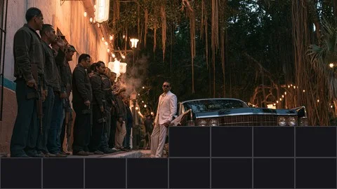
36 dílků
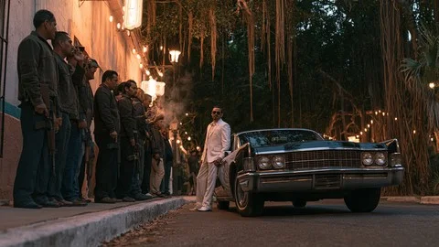
Hotovo
Model skládá obrázek dílek po dílku – stejně jako chatbot píše slovo po slově. Každý nový dílek navazuje na ty předchozí.
Další typy generování · 1/3
OD HRUBÉHO K DETAILU
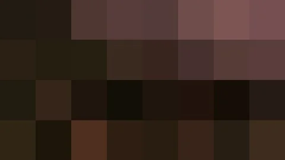
8 px – rozvržení
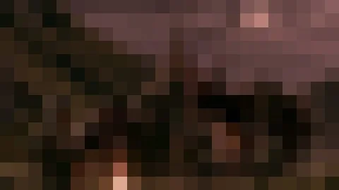
24 px – tvary
80 px – objekty
Plné rozlišení – detaily
Nejdřív hrubá geometrie scény – kde je obloha, kopec, postava. Detaily přibývají až v dalších krocích.
Další typy generování · 3/3
3D: TVAR POSTUPNĚ
Mrak bodů
→
Hrubá síť (low-poly)
→
Hladký povrch
Z textu nebo fotky vznikne nejdřív hrubá geometrie, pak se zjemní a dostane texturu.
Pojmy
SEED
Číslo, ze kterého vznikne počáteční šum.
Stejný prompt + jiný seed = jiný obrázek
Stejný prompt + stejný seed = skoro stejný obrázek
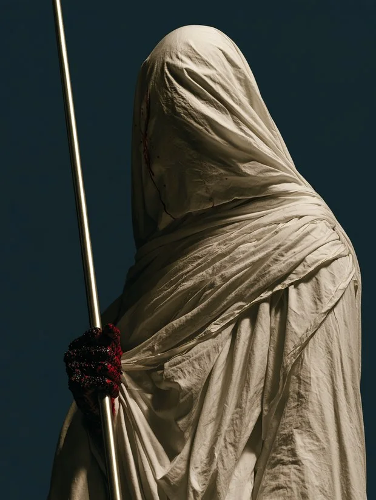
Varianta 1
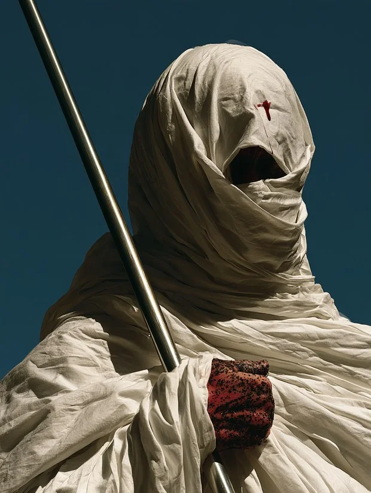
Varianta 2 – stejný prompt
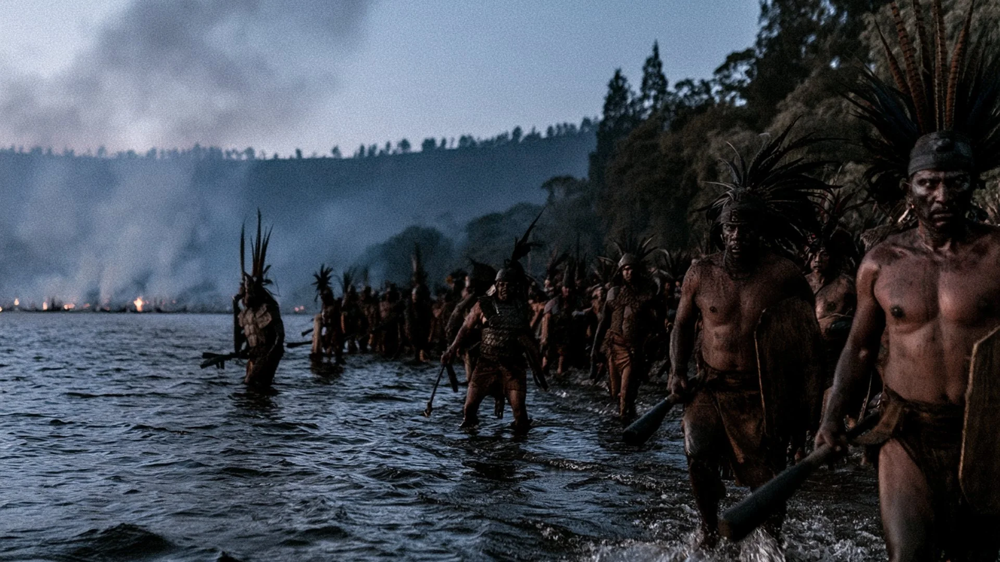
POJMY
Prompt
Textový popis toho, co chceš vidět
Negativní prompt
Co v obrázku být nemá
Seed
Číslo počátečního šumu – opakovatelný výsledek
Poměr stran
Formát: na výšku, na šířku, čtverec
Kroky
Kolikrát model ubere šum – víc kroků, víc detailu
Síla promptu
Jak přesně se model drží zadání (CFG)
Reference stylu
Převezme styl z jiného obrázku
Model
Který natrénovaný „mozek“ obrázek kreslí
LoRA
Malý doplněk, který model doučí styl nebo postavu
Variace
Nové verze podle vybraného obrázku
Upscale
Zvětšení obrázku a doplnění detailů
Inpainting
Překreslí jen vybranou část obrázku
FORMY AI
T2T
Text → text
Chat, texty, překlady
I2V
Obrázek → video
Rozpohybuje statický obrázek
T2V
Text → video
Krátké klipy z popisu
TTS
Text → řeč
Namluví text syntetickým hlasem
T2M
Text → hudba
Celé písně i se zpěvem
T2-3D
Text → 3D model
Modely pro hry, animace a tisk
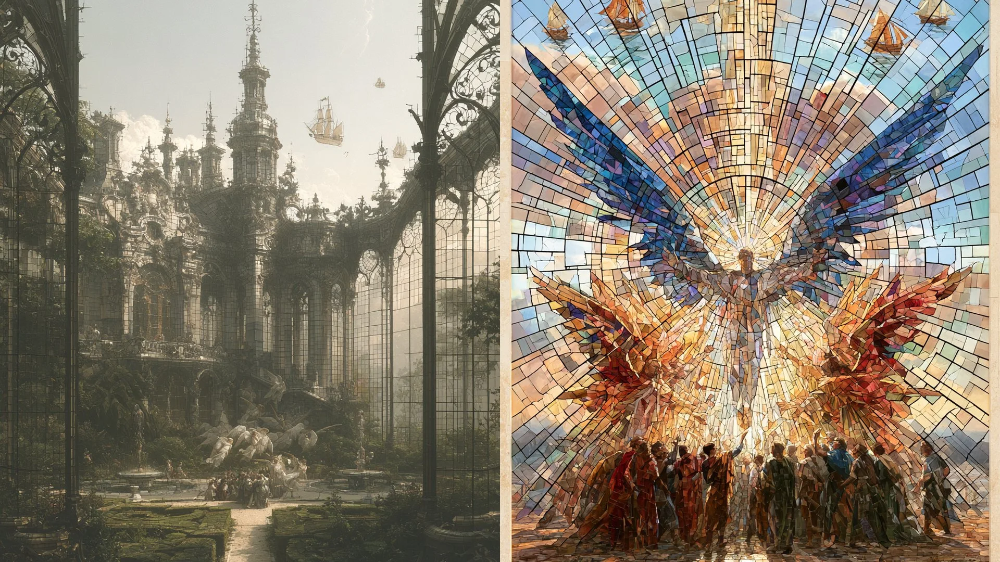
ANATOMIE PROMPTU
Subjekt
Kdo nebo co, jak vypadá, co dělá: „starý rybář s šedivými vousy drží síť“
Pozadí
Kde to je: „mlhavý přístav brzy ráno“
Detaily
Materiály a drobnosti: „mokrá vlněná čepice, rezavé háčky“
Systém
Styl, světlo, fotoaparát: „fotorealistické, měkké boční světlo, 85mm objektiv“
Negace
Co tam nechceš: „bez textu, bez vodoznaku, bez rozmazání“
ROZBOR PROMPTU
photorealistic
portrait
of a
shrouded figure,
the entire body wrapped in
layers of white scarves and sheets,
one hand reaching out
from the white fabric,
its skin covered in
black and red blisters,
the hand gripping
a silver lance,
a solid rod of pure polished silver metal
with no detail,
metallic finish,
the face completely covered
by the white sheets
with only a few drops of blood
on the area of the face,
solid sky blue background,
hyper realistic,
microdetails,
professional studio lighting,
faint film grain,
ethereal glow,
shot on Nikon Z5,
175mm lens
STYL JE V PROMPTU
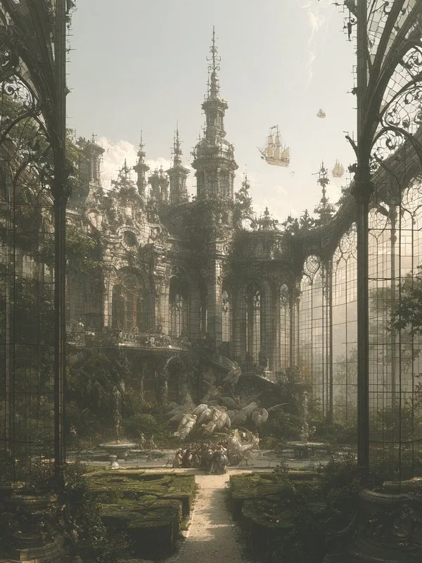
Fantasi
„a dreamy mansion...“
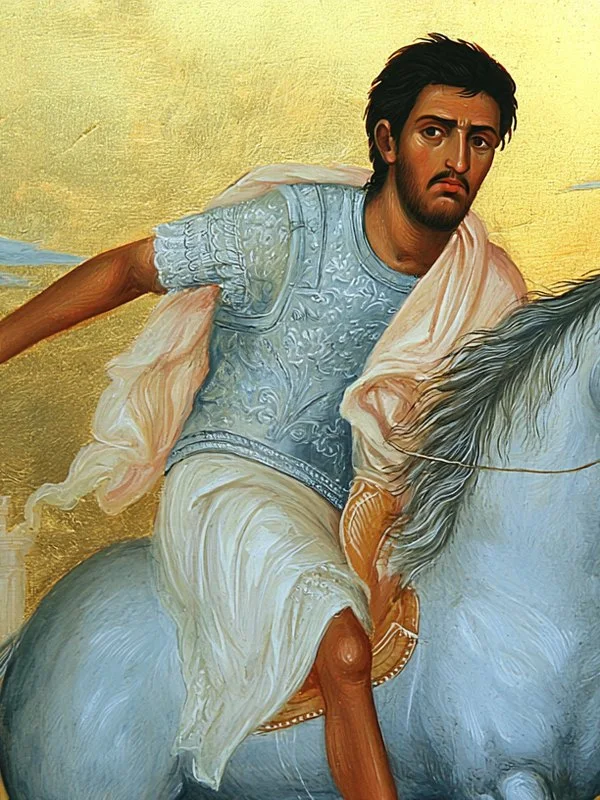
Středověký rukopis
„13th-century manuscript illumination…“
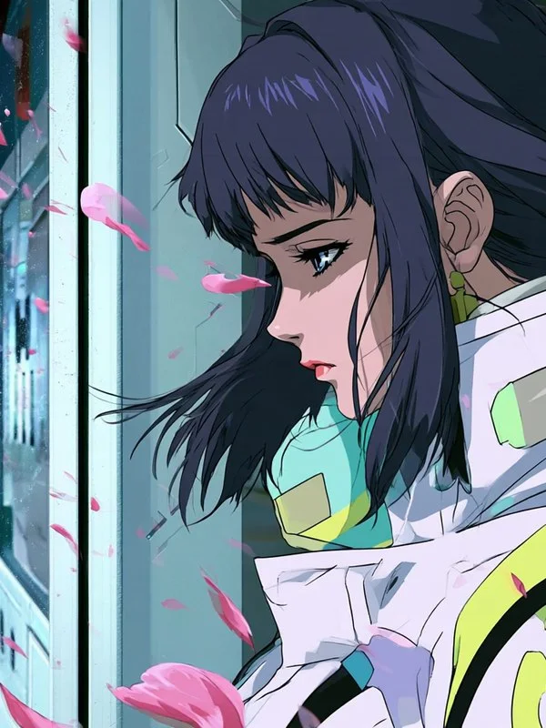
Anime
styl z referenčního obrázku
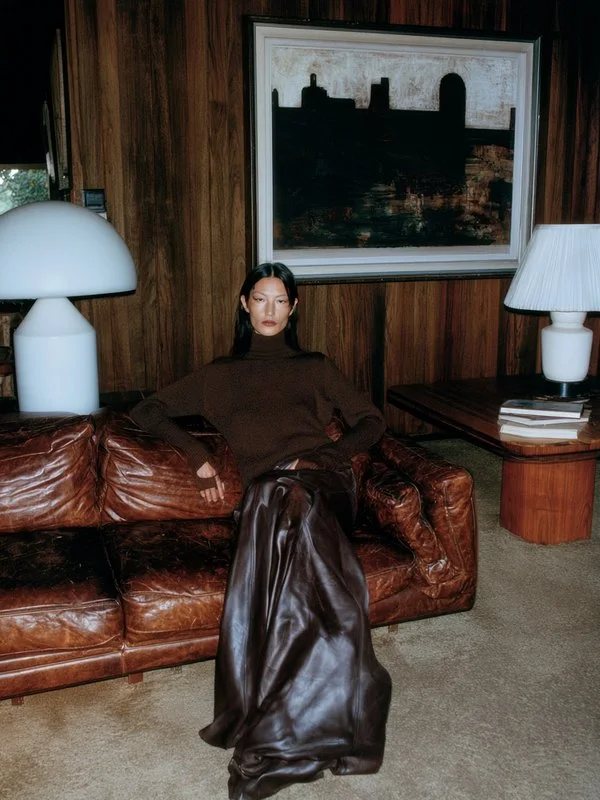
Módní foto
„fashion photoshoot in a 1970s…“
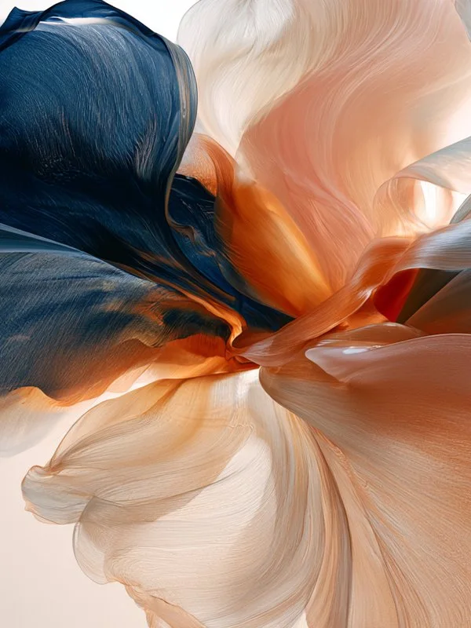
Abstrakce
„abstract art composition…“
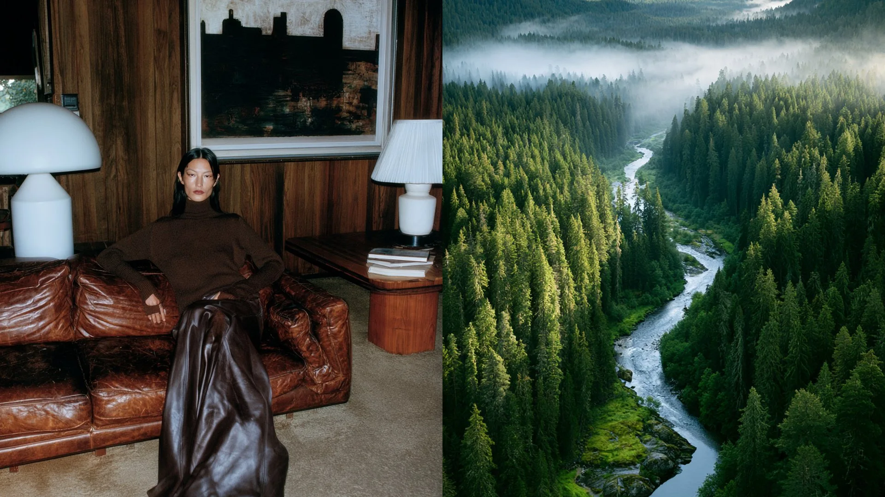
CO SI ODNÉST
Subjekt hned na začátek
„portrait of a shrouded figure“
Materiál konkrétně
„pure polished silver metal with no detail“
Co skrýt, řekni výslovně
„the face completely covered“
Jednoduché pozadí
„solid sky blue background“
Světlo a atmosféra
„studio lighting, film grain, ethereal glow“
Fotoaparát a objektiv
„shot on Nikon Z5, 175mm lens“
„Není nic horšího než ostrý obraz neostré myšlenky.“
— Ansel Adams, fotograf
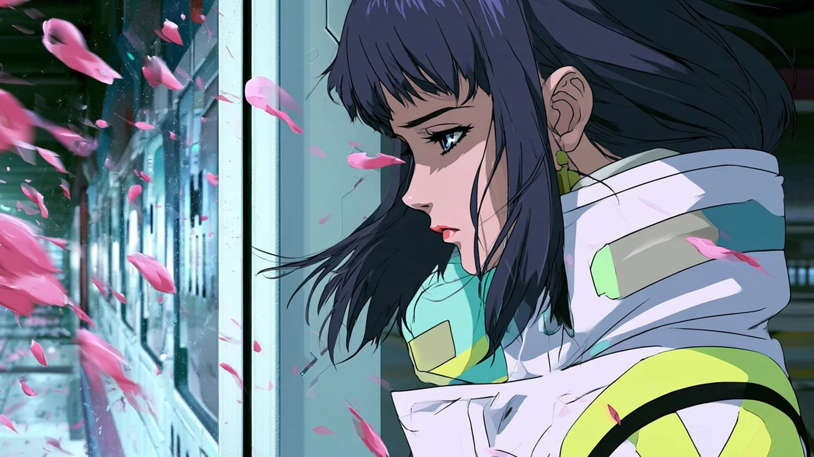
Zkuste si to
leonardo.ai
Zdarma: denní příděl tokenů (cca 150), který stačí na první pokusy.
1
Přihlas se přes Google účet
2
Otevři generování obrázků
3
Napiš prompt, vyber styl a poměr stran
4
Generuj, porovnej a uprav
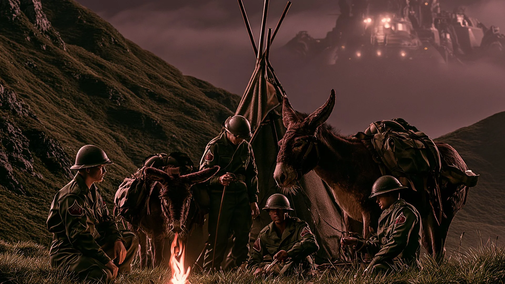
DÍKY
Otázky?